Remittance Reconciliation Lab
Build an Accounts Receivable Specialist agent that synthesizes data from banking portals, customer emails, and ERP to autonomously resolve payment discrepancies.
Global Manufacturing Corp faces payment discrepancies where bank deposits and customer email explanations arrive asynchronously. This lab builds an AR Specialist agent that synthesizes truth from multiple sources and resolves discrepancies within governance thresholds.
Canonical Source
This lab guide was authored for the Boomi Labs site. The canonical version with the latest updates can be found at https://labs.boomi.com/labs/financial-operations/remittance-reconciliation/intro.
Generate a Platform API Token
- Log in at https://platform.boomi.com → Settings → Platform API Tokens → Create new token named Agentstudio.
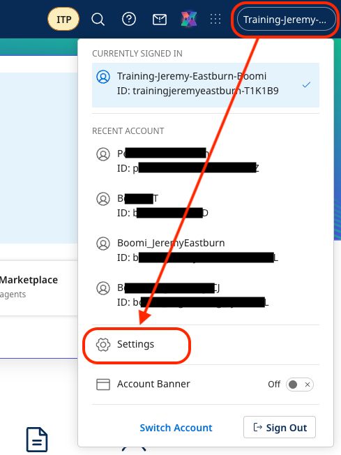

- Save your Account ID from Account Information.
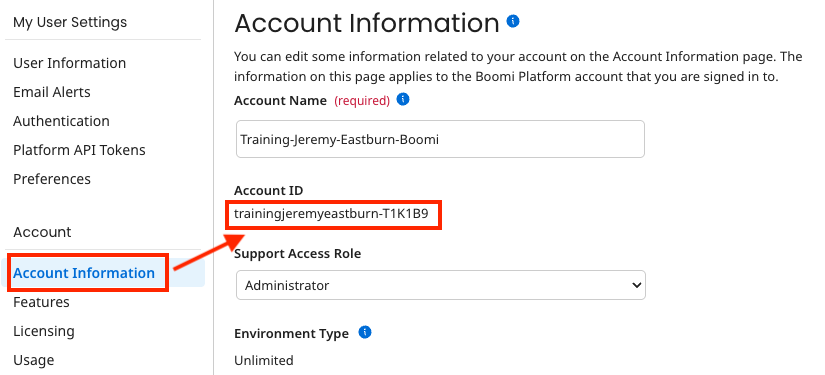
Create a Testing Environment
- Integration → Manage → Runtime Management → + New → Environment named 'Agent Testing' (Production classification).
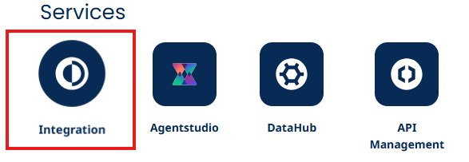
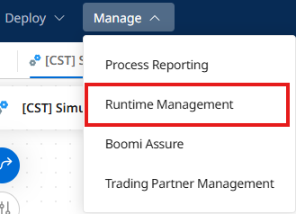
- Add Basic Runtime → In the Cloud → USA East → name 'Agent Testing Runtime'. Attach to environment.
Part 1: Create Tools for Your Accounts Receivable Agent
Build five specialized tools: Read Email Attachment, Get Bank Transaction, Get Invoice Details, Create Credit Memo, and Post Cash Receipt.
Access the API Developer Portal
- Navigate to https://aiplatformcoe-l6qlay.portal.na.controlplane.boomi.com/academy
- Subscribe to the Accounts Receivable API product. Copy your Product Key and API Base URL.
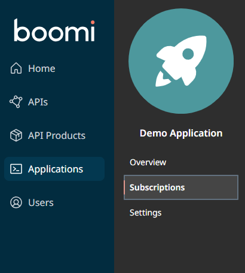
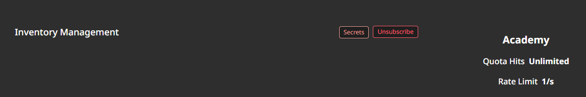
Create Tool 1: Read Email Attachment
- Navigate to Agentstudio → Agent Garden → Tools → Create New Tool → API → Add Tool.
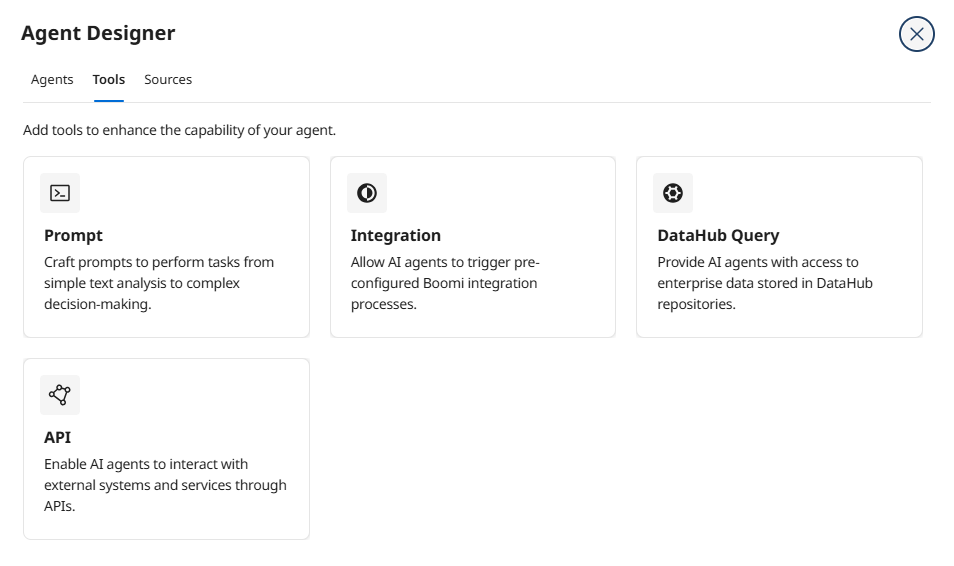
- Tool Name: [builderInitials] Read Email Attachment | Description: Extract remittance information from unstructured PDF attachments.
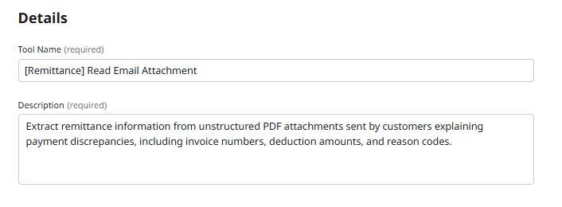
- Add Input Parameter: emailId (String, Required True)
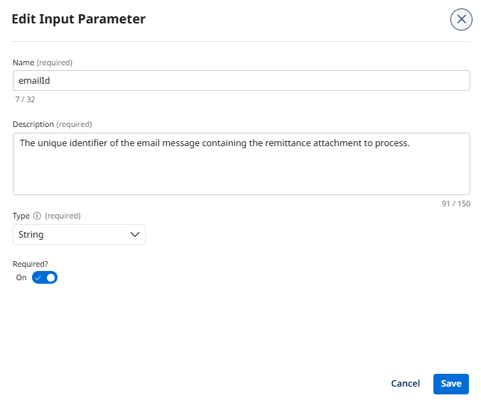
- Add Input Parameter: attachmentType (String, Required False)
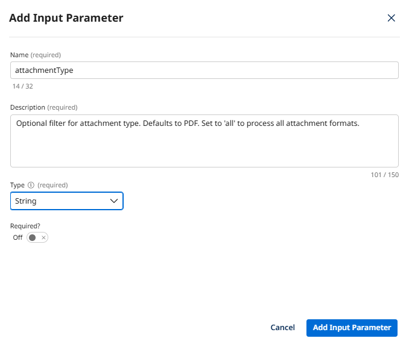
- Deploy the tool.
Create the remaining 4 tools with similar configurations: Get Bank Transaction Details, Get Invoice Details, Create Credit Memo, and Post Cash Receipt. Each uses your API Base URL and Product Key.
Part 2: Build Your Accounts Receivable Agent with AI
Design your AR Specialist agent using Build with AI and configure governance thresholds.
Start a New Agent with Build with AI
- Click New Agent → Build with AI.

- Enter goal: You are an Accounts Receivable Specialist responsible for investigating payment discrepancies, validating customer claims against invoice data, and autonomously resolving cases within your $2,500 governance threshold.
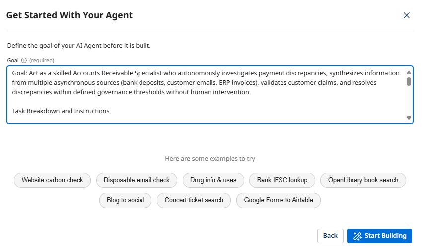
Review AI-Generated Tasks
- AI generates 4 tasks: Payment Discrepancy Investigation, Customer Claim Validation, Autonomous Discrepancy Resolution, Stakeholder Notification.
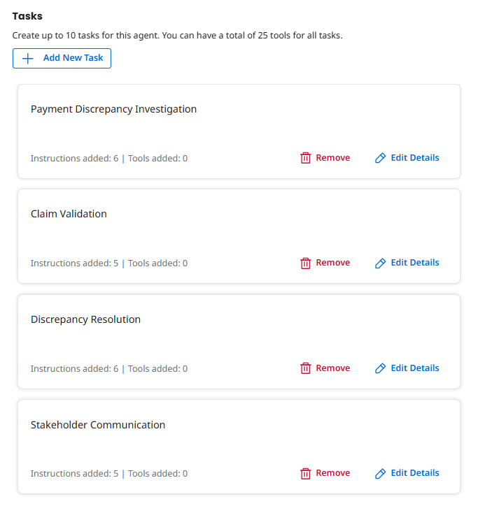
Attach Tools to Tasks
Task 1 (Investigation): Read Email Attachment, Get Bank Transaction, Get Invoice Details. Task 2 (Validation): Validate Customer Claim, Get Invoice Details. Task 3 (Resolution): Create Credit Memo, Post Cash Receipt.
Configure Agent Guardrails
- Key guardrails: Never resolve discrepancies over $2,500 autonomously. Only create credit memos for fully validated claims. Always document all financial transactions.
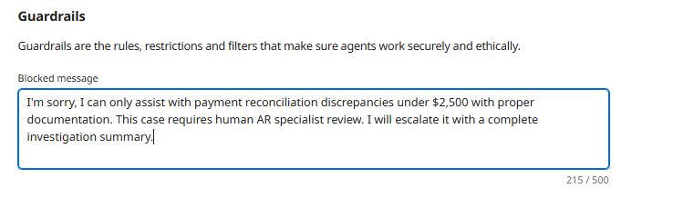
Test Your Agent
- Test truth synthesis: Investigate payment discrepancy for invoice INV-789: Bank transaction TXN-12345 shows $9,000 received but invoice was $10,000. Customer email EMAIL-2024-001 explains $1,000 deduction for 10 damaged units of SKU ABC-123.
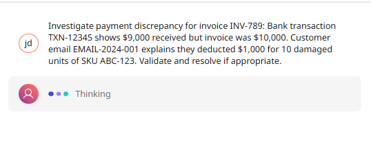
- Review agent trace to see tool calls and reasoning.
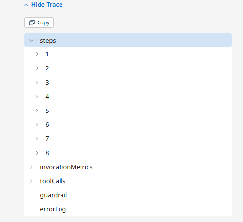
- Test governance escalation: Try a discrepancy over $2,500 — the agent should refuse to resolve autonomously.
- Deploy the agent.
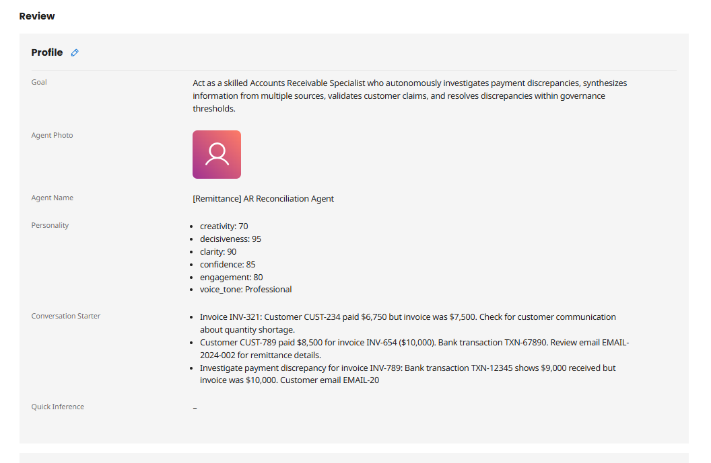

Part 3: Embed Your Agent into Business Processes
Integrate your AR Reconciliation Agent into an event-driven financial workflow.
Configure Agent Control Tower
- Navigate to Agentstudio → Agent Control Tower → Manage Providers.

- Select Account link under Boomi Agent Garden → Add Account with your Account ID, email, and API Token.
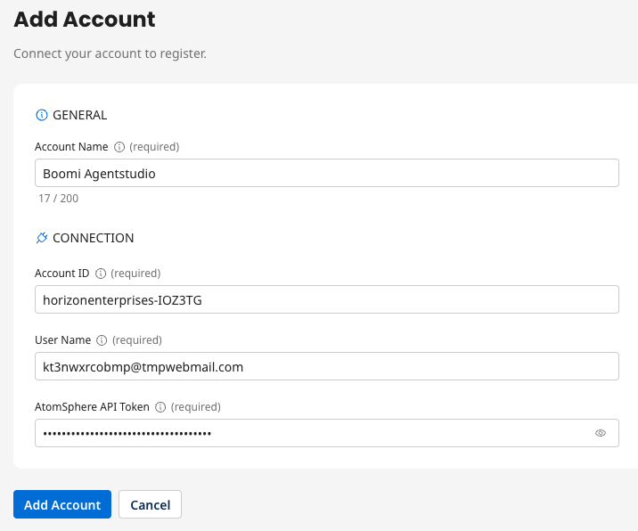
Build the Integration Process
- Click waffle menu (9 dots) → Integration.


- Navigate to Build → Components → your working directory → New Component → Process → No Data.
- Rename: [builderInitials] AR Reconciliation Automation
Add Message Step
- Add Message step with the test scenario: Investigate payment discrepancy for invoice INV-789...
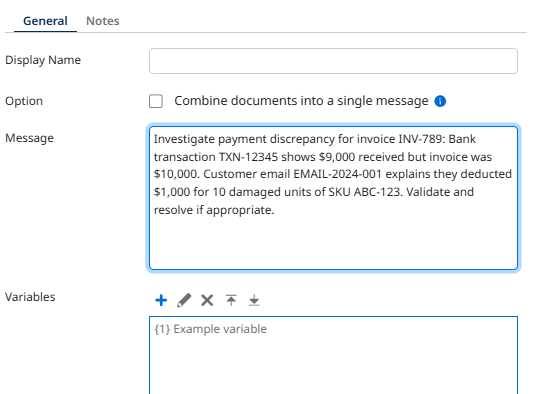
Add Agent Step
- Add Agent step → select AR Reconciliation Agent → Generate Configuration.
- Authentication tab → enter Platform API Token.

- Add End and Continue step. Save.
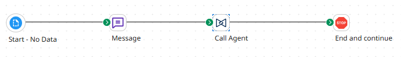
Test the Integration
- Click Test → select Agent Testing environment → OK. When complete, click Stop step → View Source Data to review the agent's full resolution.